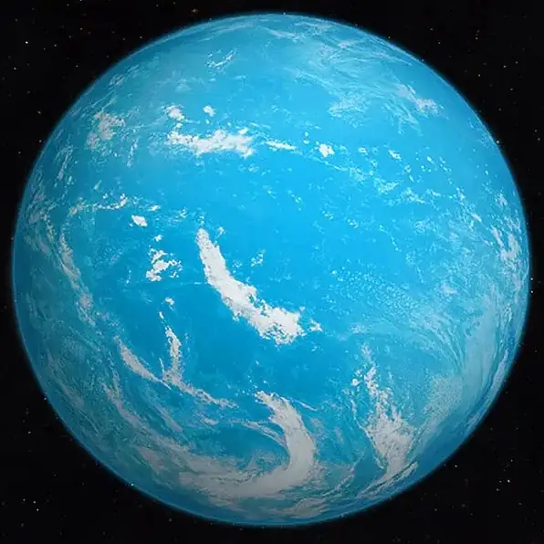

TOI 1452 b — Exoplaneta

Introdução e História
TOI 1452 b é um exoplaneta do tipo super-Terra que orbita uma estrela anã vermelha no sistema TOI 1452, localizado a aproximadamente 100 anos-luz da Terra, na constelação de Draco.
O planeta foi descoberto em 2022 a partir de dados do satélite TESS (Transiting Exoplanet Survey Satellite) da NASA, por meio do método de trânsito.
Características Físicas: Massa, Tamanho e Órbita
TOI 1452 b possui um raio estimado de cerca de 1,67 vezes o da Terra e uma massa aproximada de 4,8 massas terrestres, indicando um planeta significativamente mais massivo que o nosso.
Ele completa uma órbita ao redor de sua estrela em cerca de 11 dias terrestres, a uma distância relativamente pequena, típica de sistemas com estrelas anãs vermelhas.
Devido a essas características, o planeta pode estar em rotação travada por maré, com um hemisfério permanentemente voltado para a estrela.
Potencial de Habitabilidade
- Possível Mundo Oceânico: Modelos indicam que TOI 1452 b pode conter uma grande fração de água, possivelmente formando um planeta oceânico.
- Energia Estelar: Apesar de orbitar próximo à estrela, a baixa luminosidade da anã vermelha mantém temperaturas potencialmente moderadas.
- Atmosfera Desconhecida: Ainda não há observações diretas de atmosfera, o que limita conclusões sobre habitabilidade real.
Essas características tornam TOI 1452 b um alvo promissor para estudos futuros sobre planetas ricos em água fora do Sistema Solar.
Curiosidades
TOI 1452 b está entre os melhores candidatos a planeta oceânico já descobertos até hoje.
O sistema estelar TOI 1452 é um sistema binário, composto por duas estrelas anãs vermelhas orbitando uma à outra.
Por sua relativa proximidade e características, o planeta é considerado um alvo ideal para observações futuras com o telescópio espacial James Webb.
Origem do Nome
O nome “TOI 1452 b” segue a nomenclatura científica do satélite TESS: “TOI” significa TESS Object of Interest, e a letra “b” indica o primeiro planeta confirmado no sistema.
Referências
- NASA Exoplanet Exploration. TOI 1452 b. Disponível em: https://science.nasa.gov/exoplanet-catalog/toi-1452-b/ . Acesso em: 27 dez. 2025.
- Trottier Institute for Research on Exoplanets (iREx). An extrasolar world covered in water?. Disponível em: https://exoplanetes.umontreal.ca/en/une-planete-ocean/ . Acesso em: 27 dez. 2025.